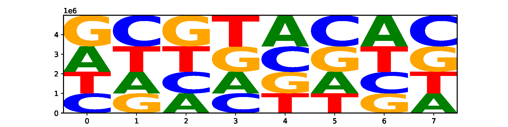
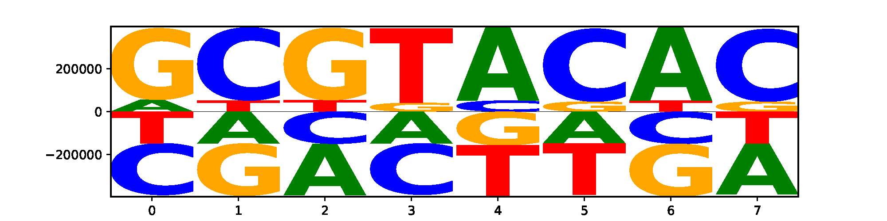
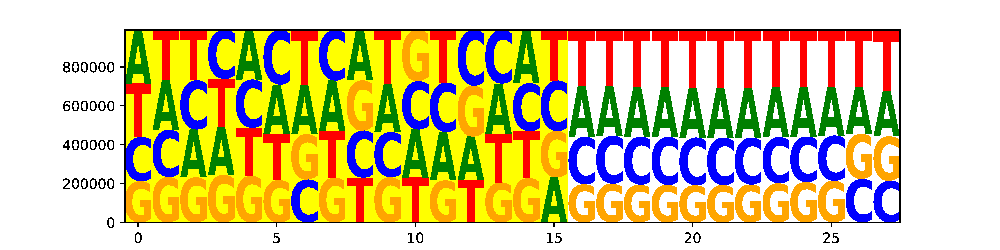
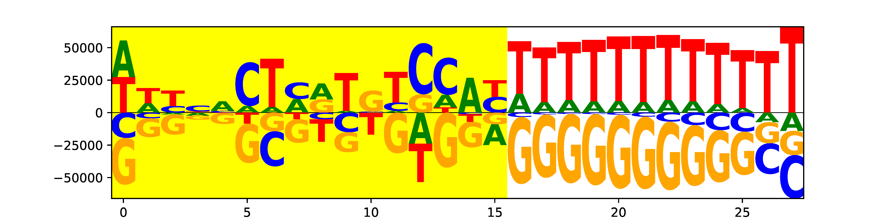

2. seq_logo.py¶
2.1. Description¶
This program generates a DNA sequence logo from fasta or fastq format file. It is useful to visualize the nucleotide compositions of sample barcodes, cell barcodes and molecular barcodes (UMI).
2.2. Options¶
- --version
show program’s version number and exit
- -h, --help
show this help message and exit
- -i IN_FILE, --infile=IN_FILE
Input DNA sequence file in FASTQ, FASTA or pure sequence format. All sequences must be the same length. This file can be plain text or compressed format (“.gz”, “.Z”,”.z”,”.bz”, “.bz2”, “.bzip2”).
- -o OUT_FILE, --outfile=OUT_FILE
The prefix of output files.
- --iformat=IN_FORMAT
The format of input file. Must be ‘fq’ or ‘fa’. defualt=’fq’
- --oformat=OUT_FORMAT
The format of output logo file. Must be ‘pdf’, ‘png’ or ‘svg’. defualt=’pdf’
- -n MAX_SEQ, --nseq-limit=MAX_SEQ
Only process this many sequences and stop. default=none (generate logo fromALL sequences).
- --font-name=FONT_NAME
The font of logo characters. For a list of valid font names, run logomaker.list_font_names().default=’sans’
- --stack-order=STACK_ORDER
Must be ‘big_on_top’, ‘small_on_top’, or ‘fixed’. ‘big_on_top’ : nucleotide with the highestfrequency will be on the top; ‘small_on_top’ : nucleotide with the lowest frequency will be on thetop; ‘fixed’ : nucleotides from top to bottom are in the same order as characters appear in thedata frame. default=’big_on_top’
- --flip-below
If set, characters below the X-axis (which correspond to negative values in the matrix)will be flipped upside down. default=False
- --shade-below=SHADE_BELOW
The amount of shading to use for characters drawn below the X-axis. 0 <= shade_below <= 1.Larger values correspond to more shading. default=0.0
- --fade-below=FADE_BELOW
The amount of fading to use for characters drawn below the X-axis. 0 <= shade_below <= 1. Larger values correspond to more fading. default=0.0
- --excludeN
If set, exclude all DNA sequences containing “N”.
- --highlight-start=HI_START
Highlight logo from this position. Must be within [0, sequence_length-1].default=none (no highlight)
- --highlight-end=HI_END
Highlight logo to this position. Must be within [0, len(logo)-1].default=none (no highlight)
- --verbose
If set, print detailed information for debugging.
2.3. Input file format¶
FASTQ format
@K00316:386:HHMKGBBXY:2:1101:28595:1314 1:N:0:NGTTTACT
AGAGCCCTCTATTCGTATAAGTTTTCAT
+
AAFFFJJJJJJJJJJJJJJJJJJJJJJJ
@K00316:386:HHMKGBBXY:2:1101:29021:1314 1:N:0:NGTTTACT
CCGGTGATCTATGTGGATAGGTAATTGA
+
A<AFFF-F<J7<JAAJFA<FJFAFFJJ<
@K00316:386:HHMKGBBXY:2:1101:29143:1314 1:N:0:NGTTTACT
CTTCGGTGTCTTGCTCACGAACAGCTAT
+
AAFFFJJJJJJJJJJJJJJFJJJJJJJJ
...
FASTA format
>seq_1
AGAGCCCTCTATTCGTATAAGTTTTCAT
>seq_2
CCGGTGATCTATGTGGATAGGTAATTGA
>seq_3
CTTCGGTGTCTTGCTCACGAACAGCTAT
...
Sequence format
AGAGCCCTCTATTCGTATAAGTTTTCAT
CCGGTGATCTATGTGGATAGGTAATTGA
CTTCGGTGTCTTGCTCACGAACAGCTAT
...
2.4. Example (Visualize sample barcode)¶
After cellranger mkfastq, three fastq.gz files will be produced: I1, R1 and R2.
I1 fastq file contains the 8 bp sample barcode. sample barcode is used to separate reads into different samples.
R1 fastq file contains the 16bp cell barcode + 10 bp UMI. Cell barcode is used to assign reads/UMIs to different cells. UMI is used to remove PCR duplicates.
R2 fastq file contains the real RNAseq reads.
#exclude barcode with "N"
$python3 seq_logo.py -i ../normal_dat/indepth_C05_MissingLibrary_1_HL5G3BBXX/bamtofastq_S1_L003_I1_001.fastq.gz --excludeN -n 5000000 -o I1
2020-09-29 01:54:41 [INFO] Reading FASTQ file "../normal_dat/indepth_C05_MissingLibrary_1_HL5G3BBXX/bamtofastq_S1_L003_I1_001.fastq.gz" ...
2020-09-29 01:55:12 [INFO] 5000000 sequences finished
2020-09-29 01:55:12 [INFO] Make data frame from dict of dict ...
2020-09-29 01:55:12 [INFO] Filling NA as zero ...
2020-09-29 01:55:12 [INFO] Making logo ...
2020-09-29 01:55:12 [INFO] 'N' will be excluded.
2020-09-29 01:55:12 [INFO] Mean-centered logo saved to "I1.logo_mean_centered.pdf".
2020-09-29 01:55:13 [INFO] Logo saved to "I1.logo.pdf".
Three files were generated.
I1.count_matrix.csv
I1.logo.pdf
I1logo.mean_centered.pdf
I1.logo.pdf
{kind=link}
I1logo.mean_centered.pdf
{kind=link}
2.5. Example (Visualize cell barcode and UMI)¶
Sequences in R1 fastq file contains cell barcode (first 16 nt) and UMI (last 10 nt)
python3 seq_logo.py -i ../normal_dat/indepth_C05_MissingLibrary_1_HL5G3BBXX/bamtofastq_S1_L004_I1_001.fastq.gz --excludeN -n 5000000 --highlight-start 0 --highlight-end 15 -o R1
2020-09-29 03:49:09 [INFO] Reading FASTQ file "../normal_dat/indepth_C05_MissingLibrary_1_HL5G3BBXX/bamtofastq_S1_L004_R1_001.fastq.gz" ...
2020-09-29 03:49:53 [INFO] 5000000 sequences finished
2020-09-29 03:49:53 [INFO] Make data frame from dict of dict ...
2020-09-29 03:49:53 [INFO] Filling NA as zero ...
2020-09-29 03:49:53 [INFO] Making logo ...
2020-09-29 03:49:53 [INFO] 'N' will be excluded.
2020-09-29 03:49:53 [INFO] Mean-centered logo saved to "R1.logo_mean_centered.pdf".
2020-09-29 03:49:55 [INFO] Highlight logo from 0 to 15
2020-09-29 03:49:55 [INFO] Logo saved to "R1.logo.pdf".
2020-09-29 03:49:56 [INFO] Highlight logo from 0 to 15
Output
Three files were generated.
R1.count_matrix.csv
R1.logo.pdf
R1logo.mean_centered.pdf
R1.logo.pdf (highlighted is the logo of cell barcode, un-highlighted is the logo of UMI)
{kind=link}
R1.logo.mean_centered.pdf (highlighted is the logo of cell barcode, un-highlighted is the logo of UMI)
{kind=link}